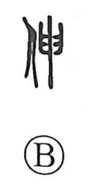

伸

Uncategorized
Kun: nobiru, nobasu, noberu | On: shin
to stretch ・ to extend ・ to lengthen
Explanation
Shirakawa reads 伸 as a phono-semantic compound: the person radical sets the field of meaning, while 申 supplies the sound and a vivid image. He takes 申 to depict a flash of lightning—a slanting, swiftly running stroke whose oblique line, when conceptually turned or drawn out, suggests stretching. With the person added, the graph first described the body’s bending and straightening—stretching out and drawing back—and then generalized to the act of stretching or extending. The same phonetic 申 also guides meanings in related graphs: 呻, the voice drawn out in a groan, and 紳, a long ritual belt that hangs down.